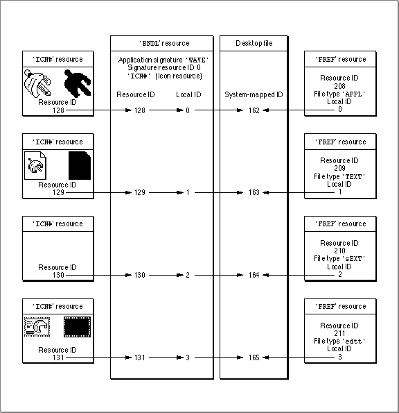

Creating a Bundle Resource
A bundle ('BNDL') resource associates all of the resources used by the Finder for your application; in particular, it associates your application and its documents with their icons. The bundle resource containsWhen the Finder first displays your application on the user's desktop, it checks the catalog file (described in detail in "Using Finder Information in the Catalog File" beginning on page 7-30) to see if your application has a bundle resource. If it doesn't,
- the application's signature
- the resource ID number of its signature resource (which should always be 0)
- the assignment of local IDs to the resource IDs of all icon list resources defined for the application; the local IDs must be the same as those assigned within corresponding file reference resources
- the assignment, for compatibility reasons, of local IDs to file reference resource IDs (For consistency, these can be the same local IDs that are assigned inside the file reference resources, but they don't have to be--they only need to be unique for every file reference resource.)
the Finder displays the default icons shown in Figure 7-5 on page 7-12. If your application has a bundle resource, the Finder installs the information from the bundle resource and all its bundled resources into either the desktop database for a hard disk
or into the Desktop file for a floppy disk and uses this information to display icons for the file types associated with your application.You must assign local IDs to your icon list resources within your bundle resource. Make sure that for all your file types with icons, these local IDs match the local IDs you assigned inside their corresponding file reference resources. In the Desktop file on floppy disks (and on hard disks running earlier versions of system software), the Finder renumbers the resource IDs that you've assigned to your resources to avoid conflicts with the resources of other applications. Therefore, the bundle resource has to rely on these local IDs to map icon list resources to their file reference resources; that is, the bundle resource uses the local ID you assign to an icon list resource to map it to the file reference resource that has specified the same local ID.
For example, the file reference resource with resource ID 208 in Listing 7-3 on page 7-18 shows that the file type
'APPL'(the SurfWriter application file) is assigned a local ID
of 0. In the bundle resource shown in Listing 7-4, you see that local ID 0 is assigned to the icon list resource with resource ID 128. This maps the icon defined by this resource (see Figure 7-7 on page 7-13) to the SurfWriter application file. Listing 7-4 shows
the bundle resource for the icons and file reference resources defined in Listing 7-2 on page 7-13 and in Listing 7-3 on page 7-18.Listing 7-4 Rez input for a bundle resource
resource 'BNDL' (128, purgeable) { /*SurfWriter bundle resource*/ 'WAVE', /*SurfWriter signature*/ 0, /*resource ID of signature resource: should be 0*/ { 'ICN#', { /*mapping local IDs in 'FREF's to 'ICN#' IDs*/ 0, 128, /*'FREF' w/ local ID 0 maps to 'ICN#' res ID 128*/ 1, 129, /*'FREF' w/ local ID 1 maps to 'ICN#' res ID 129*/ 2, 130, /*'FREF' w/ local ID 2 maps to 'ICN#' res ID 130*/ 3, 131 /*'FREF' w/ local ID 3 maps to 'ICN#' res ID 131*/ /*no 'FREF' with local ID 4 in this list: */ /* TeachText's icons used for 'ttro' file type*/ }, 'FREF', { /*local res IDs for 'FREF's: no duplicates*/ 10, 208, /*local ID 10 assigned to 'FREF' res ID 208*/ 11, 209, /*local ID 11 assigned to 'FREF' res ID 209*/ 12, 210, /*local ID 12 assigned to 'FREF' res ID 210*/ 13, 211, /*local ID 13 assigned to 'FREF' res ID 211*/ 14, 212 /*local ID 14 assigned to 'FREF' res ID 212*/ } } };In Listing 7-4, notice that you also assign local IDs to file reference resources inside the bundle resource. This assignment is superfluous because the Finder doesn't map these local IDs to any other resources. The local ID assignment for file reference resources inside the bundle resource was implemented for the earliest versions of Macintosh system software, and it remains this way today to maintain backward compatibility. For compatibility with the format of the bundle resource, assign local IDs to file reference resource IDs. You may number them any way you like, except that each local ID in this particular list must be unique.Of all the icon resource types that make up an icon family, you need to list only the icon list resource in the bundle resource. The Finder automatically recognizes and loads all the other members of the icon family--provided that you have given them the same resource IDs that you have assigned to your icon list resource.
If the user drags documents created by other applications to your application icon, and
if you have created file reference resources for these documents' file types, the Finder launches your application and passes it the names of the documents. You should create file reference resources for all file types that your application supports. Do not provide icon resources for file types created by other applications because the Finder won't use them, but will instead use the icon resources defined by the documents' creators. Though the local IDs of such a file reference resource are superfluous in the file reference resource and at the bottom of the bundle resource, the resource formats require that you provide local IDs in both.For example, notice in Listing 7-3 on page 7-18 that the file reference resource with resource ID 212 is assigned a local ID of 4, but that no icon list resource is assigned to local ID 4 in the bundle resource in Listing 7-4 on page 7-20. This file reference resource, which specifies a file type of
'ttro', was created in Listing 7-3 to make the Finder launch the SurfWriter application when users drag TeachText read-only documents to the SurfWriter application icon. No icon mapping is made for this file type in the SurfWriter application's bundle resource because the Finder displays the icons defined for it by the TeachText application. The file reference resource with resource ID 212 is assigned to local ID 14 in the bundle resource in Listing 7-4 because the format of the resource requires a local ID for all associated file reference resources.You alert the Finder that your application has a bundle resource by setting a bit in the file's Finder flags field. (Most development environments provide a simple tool for setting the bundle bit. "Using Finder Information in the Catalog File" beginning on page 7-30 describes Finder flags.)
Figure 7-8 illustrates how the bundle resource created in Listing 7-4 uses local IDs to map icon list resources to file reference resources. This figure illustrates two main concepts: first, that one bundle resource ties together all the icon resources and file reference resources for your application and all of its documents; and second, that the icon resources and their associated file reference resources are mapped together by
local IDs.Figure 7-8 Linking icon list resources and file reference resources in a bundle resource

In Figure 7-8, the application file's icon list resource has resource ID 128 while its file reference resource has resource ID 208. For easier code maintenance, you should probably assign the same resource ID to a file's file reference resource that you assign
to its icon list resource. However, because the Finder renumbers these whenever it
adds them to a Desktop file on floppy disks, you must map them by using local IDs. In
Figure 7-8, the application file's icon list resource is assigned local ID 0. This maps the icon to the file type described by the file reference resource with local ID 0--in this case, the file reference resource with resource ID 208.The general steps you must take to provide icons for applications and documents are enumerated here and assume that you are using a tool, such as ResEdit, that allows you to open and edit several resources simultaneously. (Remember that these resources must have resource IDs of 128 or greater.)
To provide your application with icon families for itself and for its documents, follow these steps:
- Design a graphic element that all of your icon families can share in common and that can help users quickly identify the files associated with your product.
- Create an icon list (
'ICN#') resource for your application file.- Create the other members of the icon family of the application file--resources of types
'ics#','icl8','icl4','ics8', and'ics4'--and give each of these the same resource ID as the icon list resource.- Create a bundle (
'BNDL') resource.- Within the bundle resource, list the resource ID number of the application file's icon list resource and assign it a local ID of 0.
- Create a file reference resource for the application file.
- Within the file reference resource, assign the application a file type of
'APPL'and assign it a local ID of 0.- Within the bundle resource, list the resource ID number of the file reference resource for the application file and assign it a unique local ID--for example, 0 to maintain consistency with the local ID assigned in the file reference resource.
- Create another icon family--consisting of resources of types
'ICN#','ics#','icl8','icl4','ics8', and'ics4'--to represent one type of document that your application creates.- Within the application's bundle resource, list the resource ID number of the document's icon list resource and assign it a local ID of 1.
- Create a file reference resource for the document.
- Within the file reference resource for the document, assign it a file type (for example,
'TEXT'or'edtt') and assign it a local ID of 1.- Within the bundle resource, list the resource ID number of the file reference resource for the document and assign it a unique local ID--for example, 1 to maintain consistency with the local ID assigned in the file reference resource.
- Assigning unique local IDs for every type of document your application creates, repeat steps 9 through 13.
- If your application supports file types of other applications, define file reference resources for them, but do not create icon resources for them.
- Create a signature resource (as described in "Giving a Signature to Your Application and a Creator and a File Type to Your Documents" beginning on page 7-7) with resource ID 0.
- Set the file's
hasBundlebit and clear thehasBeenInitedbit in the file's Finder flags. (Finder flags are described in "Using Finder Information in the Catalog File" beginning on page 7-30.)- Save and close all of the resources. (When you restart your Macintosh computer, your application should appear with its own icon. If you later alter any of your icons, clear the
hasBeenInitedbit and rebuild your desktop database by pressing Command- Option when restarting.)